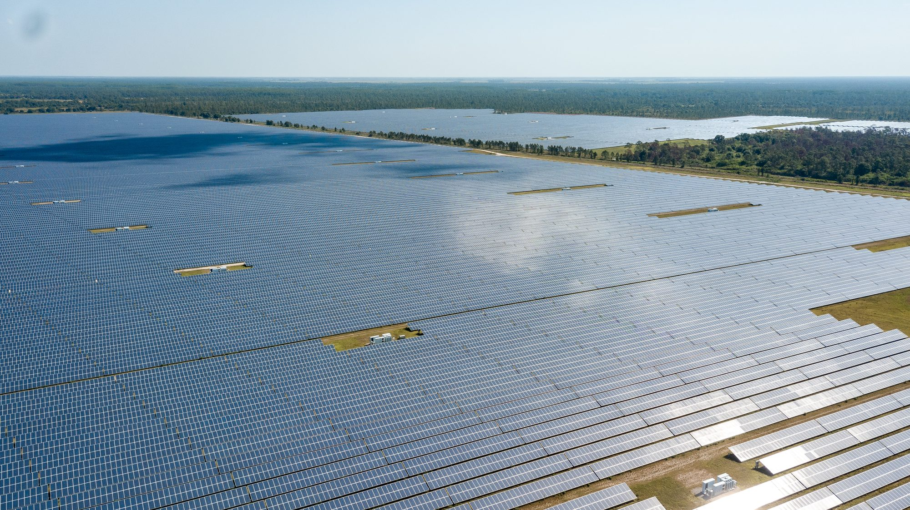

How the program works
A statewide platform for company building, with a resilience focus anchored at Babcock Ranch. The inaugural cohort launches this fall.
This page is content-complete and reviewed by the Finn team. Still open: whether to add an "apply" link before the application window closes on August 21.

What it is
The Southwest Florida Resilience Accelerator is the inaugural resilience track of Ambition Accelerated, the Florida Council of 100's statewide effort to build the next generation of American companies in Florida. It connects founders directly with CEOs, mentors, customers, and capital, and anchors that work at Babcock Ranch, America's first solar-powered town.
The inaugural cohort is focused on companies developing technologies and solutions for climate resilience: the systems, designs, and services that help communities withstand storms, heat, flooding, and other environmental stress.
Focus areas
The cohort spans four areas of resilience work:
- Natural systems modeling. Understanding and predicting how natural systems respond to climate stress.
- Inspections, assessment and certification. Measuring, verifying, and certifying how structures and systems perform.
- Resilient real estate and infrastructure systems. Energy, water, and built systems designed to keep working through storms and prolonged stress.
- Purpose-built planning and design. Methods for building communities that anticipate climate risk from the start.
How it works
Ten founders are selected for an eight-week hybrid program running from mid-October through early December, with two sessions at Babcock Ranch on October 26–27 and November 19–20, 2026. Over those weeks, participants receive mentorship from executives in resilience and sustainability, form strategic partnerships to pilot and scale their solutions, gain accelerated entry into Florida's market, and connect with potential investors.
The program wraps with a showcase, where founders present their work to an audience of potential funders and partners.
Why Babcock Ranch
Babcock Ranch is a recognized leader in climate-resilient development and a living laboratory, a real-world environment where founders can pilot, test, and scale their solutions. The Accelerator program allows Babcock Ranch to leverage its expertise to help founders who are developing solutions to help other communities improve their resiliency.